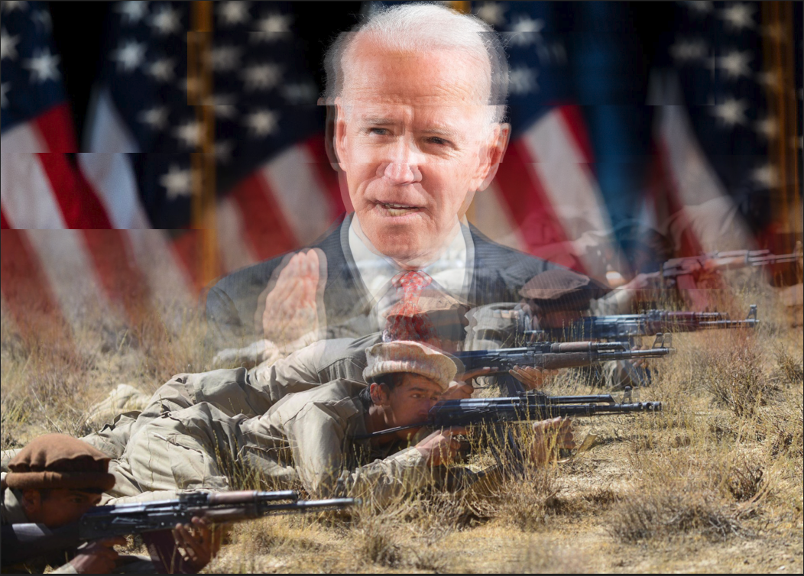
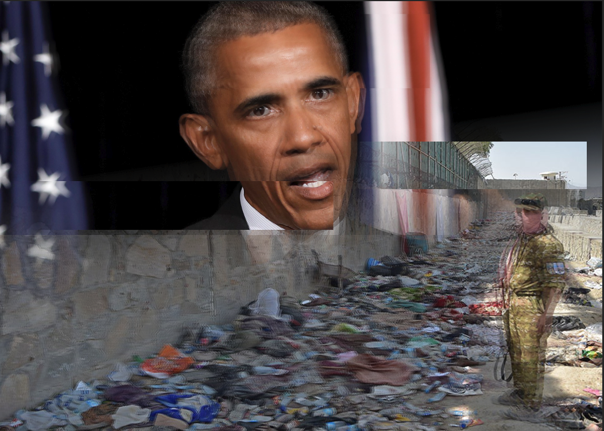

The glitch project, shown below, is a summary of United States involvement in the early 21st century. The project depicts the start and end of US escalation and involvement in Afghanistan and its eventual end.
The glitches were made using 2 different images with 2 overlapping opacity gradients blurring the two images together. This was done so as to give the allusion that the 2 images are in fact one and therefore inseparable from each other. This was done in order to symbolize the ties that each respective president had.
The glitch effect was created by copying segments of the image, lowering the opacity of each segment and moving it around, in order to increase the blur effect and to convey the chaotic nature of the situation as a whole.
Glitch 2
The theme of the second glitch is the involvement of the United States in Afghanistan under the Obama Administration. The picture of the president is meant to establish the victories of the Obama Administration against the Taliban. The picture of the soldier and the trash is meant to represent the overall personal and economic collateral of the war.

Glitch 1
The first glitch is meant to depict the initiating event of the invasion of Afghanistan and the public perception of Bush after 911. The picture of the twin towers is the representation of the United States main
The picture of Bush is meant to symbolize the public support for Bush after 911, and the arrogant mindset of the United States, in their approach to the war in Afghanistan.
The Glitch also addresses the Irony of the increased public support due to 911, because the attack itself occurred due to systemic failures in the intelligence community, which were under his watch.

Glitch 3
The third glitch is a representation of the withdrawal of United States Forces under the Biden Administration. The picture of Biden is meant to convey the messaging of the war from the Biden Administration to the American public. The Afghan fighters are a representation of the escalating victories of the Taliban and the actual events leading up to and during the withdrawal of US troops.